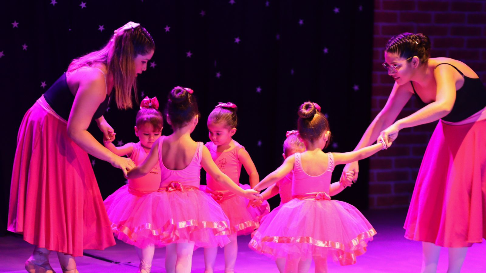
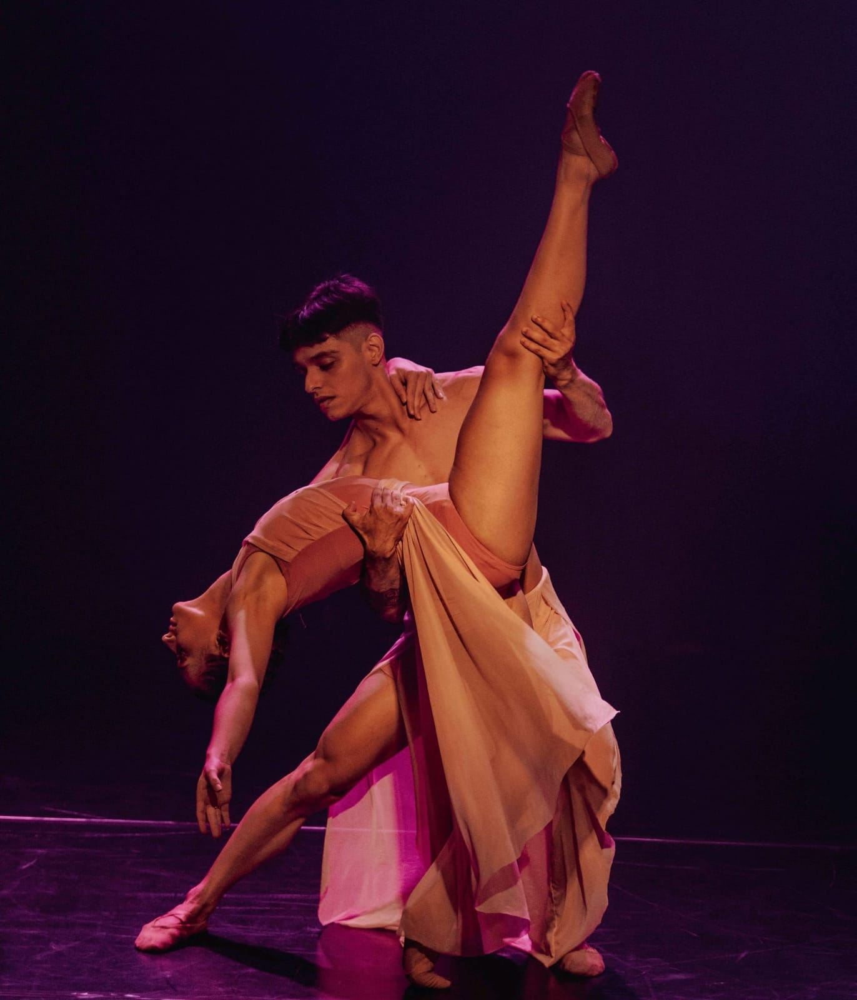
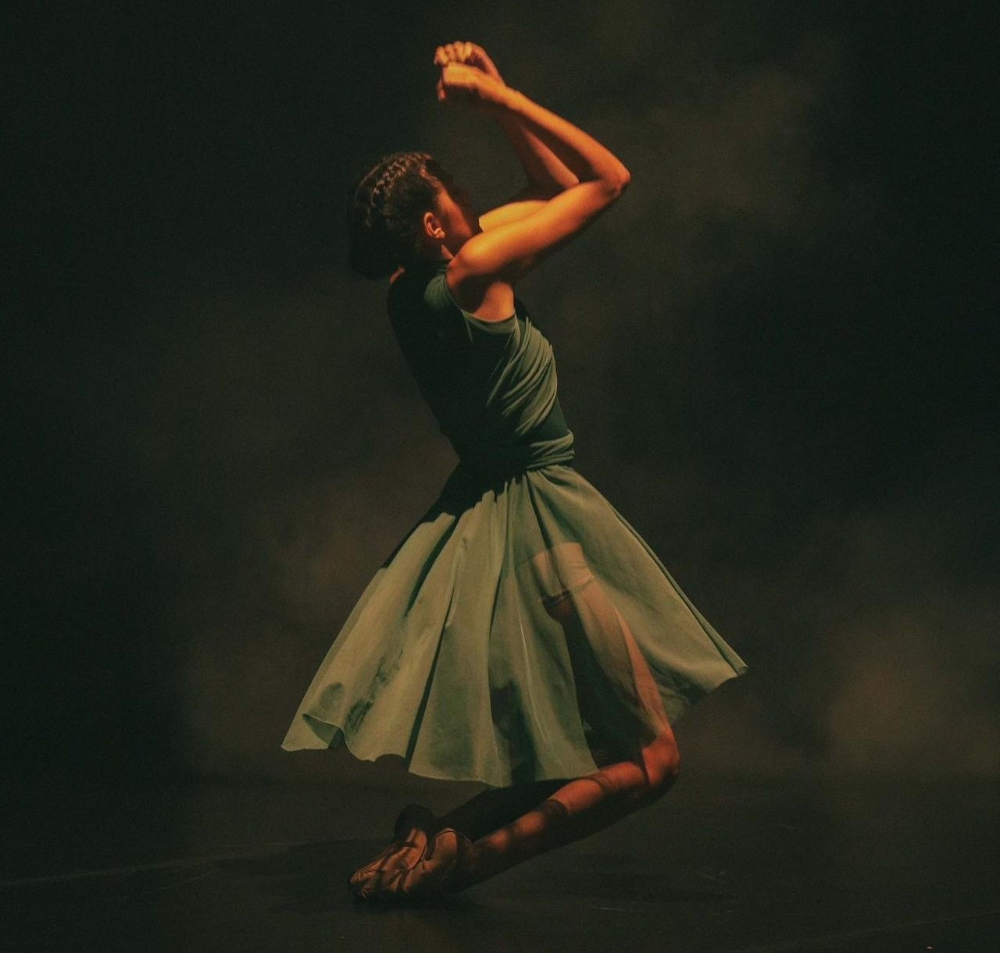

Projetos
Fotografias de espetáculos






Giselle Caroline Rodrigues da Silva, diretora geral e fundadora do Centro de Movimento Giselle Rodrigues, é uma apaixonada pela arte do movimento e pela promoção da saúde através da dança. Graduada em Educação Física pela Universidade Estadual de Roraima em 2020, ela traz consigo um profundo conhecimento acadêmico aliado à sua vasta experiência prática.
Sua jornada na dança começou aos 4 anos de idade, um marco que desencadeou uma trajetória dedicada ao aprimoramento técnico e à exploração criativa no universo do ballet. Sua especialização em Ballet com Metodologia Lúdica é reflexo de seu compromisso em tornar a aprendizagem da dança uma experiência dinâmica, envolvente e acessível para todas as idades e habilidades. Como diretora geral, Giselle lidera com paixão e dedicação, buscando sempre inovar e elevar os padrões de excelência no ensino da dança. Seu Centro de Movimento é mais do que uma escola de dança; é um espaço de inspiração, crescimento pessoal e celebração da expressão corporal.
Fotografias de espetáculos
Para todas as idades